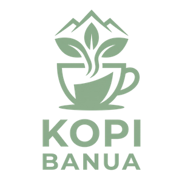
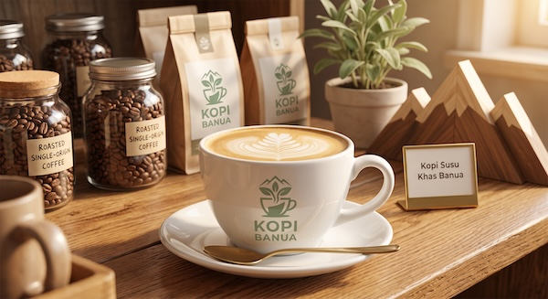

Ulasan dari Rina
Kopi susu gula arennya pas, tidak terlalu manis. Tempatnya nyaman untuk mengerjakan tugas.
Rina, mahasiswa · Ulasan Google Maps

Kedai kopi rumahan sejak 2021
Dari petani Pengaron langsung ke cangkir Anda. Pesan dari rumah, ambil di kedai, atau kami antar ke sekitar Kayu Tangi.

Kopi Banua adalah kedai kopi rumahan yang berdiri sejak 2021 di Jalan Sultan Adam, Banjarmasin. Kami memakai biji robusta dari petani Pengaron dan menyangrainya sendiri setiap pagi, sehingga setiap cangkir selalu segar.
Robusta Pengaron, Kabupaten Banjar, dibeli langsung dari petani.
Disangrai sedikit demi sedikit setiap pagi, tidak pernah ditimbun.
Mulai Rp 10.000, cocok untuk kantong mahasiswa.
| Hari | Buka | Tutup |
|---|---|---|
| Senin – Jumat | 08.00 | 22.00 |
| Sabtu – Minggu | 09.00 | 23.00 |
| Libur nasional | 10.00 | 21.00 |
| Paket | Isi | Harga |
|---|---|---|
| Paket Pagi | Kopi Tubruk + Bingka | Rp 20.000 |
| Paket Nugas | Kopi Susu + Roti Bakar | Rp 30.000 |
| Harga sudah termasuk pajak. Berlaku setiap hari. | ||


Kopi susu gula arennya pas, tidak terlalu manis. Tempatnya nyaman untuk mengerjakan tugas.
Rina, mahasiswa · Ulasan Google Maps
Bingka kentangnya mengingatkan saya pada buatan nenek. Wajib dicoba.
Pak Rahmat, pelanggan setia · Instagram @kopibanua
Pesan lewat situs lalu tinggal ambil. Cepat dan tidak perlu antre.
Dinda, karyawan · Ulasan Google Maps
Isi form di bawah ini. Pesanan tersimpan di peramban Anda dan langsung muncul pada dashboard admin Kopi Banua.
| Waktu | Nama | Menu | Jumlah | Total | Status | Aksi |
|---|---|---|---|---|---|---|
| Total keseluruhan | Rp 0 | 0 pesanan | ||||
Belum ada pesanan. Silakan isi form di atas.